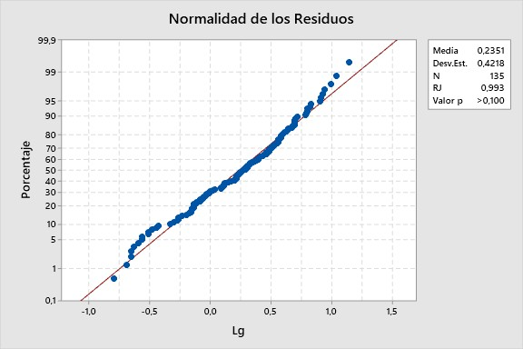
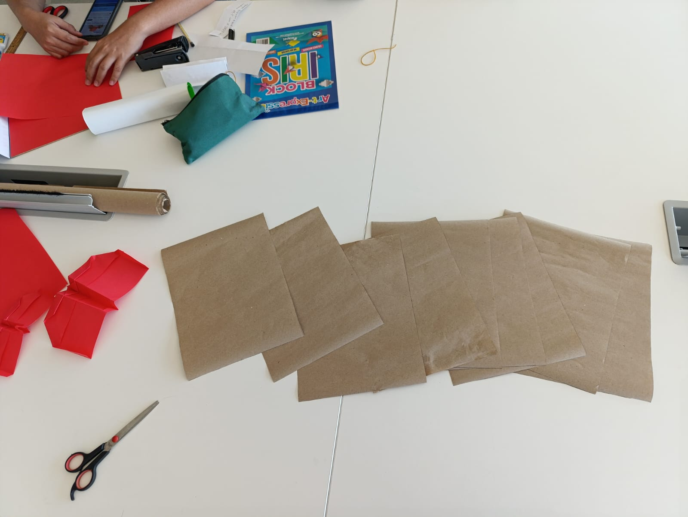
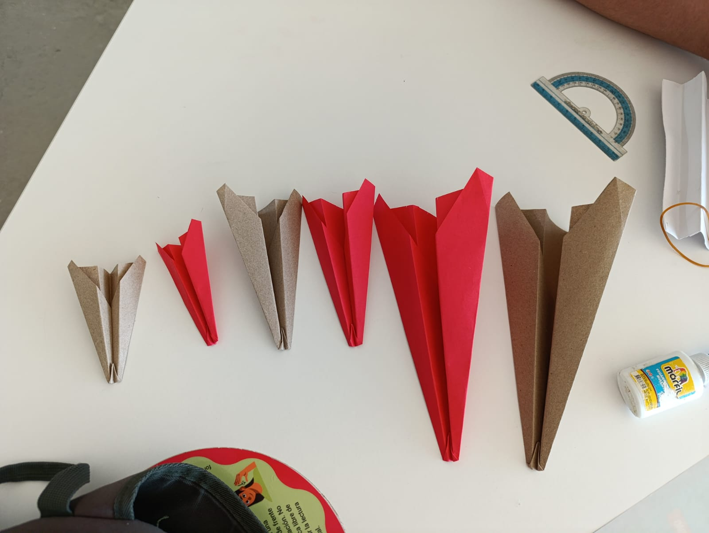
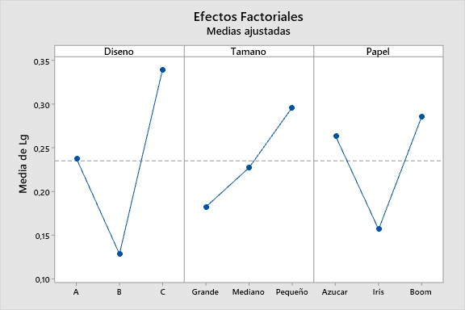
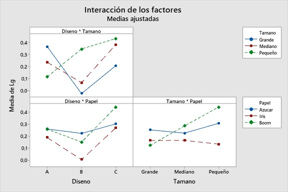

Estimación del Tiempo de Vuelo de Aviones de Papel mediante un Diseño Factorial de Tres Vías
Jose Angel Urquijo Parra ![]()
Introducción
En un mundo donde los datos son abundantes pero el tiempo y los recursos son limitados, la experimentación eficiente se convierte en una ventaja competitiva. No se trata solo de probar combinaciones de factores, sino de encontrar patrones ocultos y tomar decisiones informadas con base en evidencia.
Hoy, el diseño de experimentos evoluciona junto con la inteligencia artificial, la simulación y la automatización. Los desafíos del futuro exigen estrategias experimentales más inteligentes, capaces de adaptarse y aprender en tiempo real. Innovar no es cuestión de suerte, sino de experimentación planificada.
El diseño factorial es una técnica estadística fundamental que permite evaluar el efecto de múltiples factores sobre una variable de respuesta. En este proyecto, se llevará a cabo un experimento diseñado para investigar factores que influyen en el tiempo de vuelo de un avión hecho de papel, manteniendo constantes tanto la fuerza aplicada como la inclinación del lanzamiento.
Para ello, utilizaremos un diseño factorial 3x3x3, lo que significa que exploramos tres factores clave: el diseño del avión, el tipo de papel y el tamaño del avión, cada uno con tres niveles diferentes, 5 réplicas para cada uno de los niveles de cada tratamiento, y así lograr capturar la mayor variabilidad y disminuyendo el error experimental.


A través de este estudio, buscamos aplicar los principios del diseño de experimentos completamente al azar con un enfoque factorial, con el fin de analizar el efecto que diferentes factores tienen sobre el tiempo de vuelo de los aviones de papel. Esta metodología permite evaluar no solo los efectos principales de cada factor, sino también las interacciones entre ellos, lo cual proporciona una visión más completa del comportamiento de la variable de respuesta.
Para modelar estadísticamente el experimento, se utilizó un diseño factorial completo con tres factores: \(A\), \(B\) y \(C\), con \(a\), \(b\) y \(c\) niveles respectivamente. El modelo matemático general correspondiente es:
\[\begin{align*} Y_{ijk} &= \mu + \alpha_i + \beta_j + \gamma_k \\ &\quad + (\alpha\beta)_{ij} + (\alpha\gamma)_{ik} + (\beta\gamma)_{jk} \\ &\quad + (\alpha\beta\gamma)_{ijk} + \epsilon_{ijk} \end{align*}\]
Donde:
\(Y_{ijk}\) es el valor de la respuesta para el \(i\)-ésimo nivel del factor \(A\), el \(j\)-ésimo nivel del factor \(B\), y el \(k\)-ésimo nivel del factor \(C\).
\(\mu\) es la media general de todas las observaciones.
\(\alpha_i\), \(\beta_j\), \(\gamma_k\) son los efectos principales de los factores \(A\), \(B\) y \(C\), respectivamente.
\((\alpha\beta)_{ij}\), \((\alpha\gamma)_{ik}\), \((\beta\gamma)_{jk}\) son los efectos de interacción de dos factores.
\((\alpha\beta\gamma)_{ijk}\) es el efecto de interacción de tres factores.
\(\epsilon_{ijk}\) es el error aleatorio, que se asume independiente y normalmente distribuido con media cero y varianza \(\sigma^2\).
Este modelo nos permite estimar cómo cada uno de los factores (por separado y en combinación) incide en la respuesta. Para verificar si estos efectos son estadísticamente significativos, se formula el siguiente juego de hipótesis global para cada término del modelo:
Hipótesis nula \(H_0\): el efecto del factor (o interacción) no es significativo, es decir, todas las medias de los tratamientos son iguales.
Hipótesis alternativa \(H_1\): al menos un nivel del factor (o interacción) produce un cambio significativo en la media de la respuesta.
Estas hipótesis se contrastan mediante un análisis de varianza (ANOVA). En función de los valores p y la comparación entre los estadísticos F calculados y los F tabulados, se determinará qué efectos son significativos. Esto nos permitirá obtener conclusiones útiles para optimizar el diseño de los aviones de papel, comprendiendo mejor los principios aerodinámicos involucrados.
Metodología
Durante el desarrollo del diseño experimental, se establecio un número de factores, niveles por cada factor y el número de repeticiones en cada uno de ellos. Para el tiempo de vuelo de los aviones de papel, se eligieron tres diseños nombrados como diseño (A,B,C), a su vez el tipo de papel con el se realizó cada avión y por ultimo adiccionamos tres diferentes tamaños por diseño, tamaños (grande, mediano, pequeño).
| Factor | Niveles | Réplicas por combinación | Total observaciones |
|---|---|---|---|
| Diseño | A, B, C | 5 | 45 × 3 = 135 |
| Tamaño | Grande, Mediano, Pequeño | 5 | |
| Papel | Azucar, Iris, Boom | 5 |
Una vez definido los aspectos antes mencionados, se procedio a reliazar el emsanblado de cada avión considerando cada uno de los factores a incluir en el modelo. Se construyeron 135 aviones donde por cada diseño se construyeron 45 por tamaño 45 y por papel 45. A continuación se datalla las caracteristicas atribuidas a cada diseño relacionado con el tipo de papel y tamaño
| Factores | Papel | Tamaño | Diseño |
|---|---|---|---|
| Niveles | 3 | 3 | 3 |
| Réplicas | 5 | 5 | 5 |
| N° Aviones | 45 | 45 | 45 |
Se eligieron tres diseños con un estilo aérodinamico distinto, el primero; se realizo de la siguiente manera: . Para los tres tamaños se tomaron hojas de diferentes tipos de papel con unas dimensiones de 27,4 para la base y una altura de 20,4 cm para cada categoria de los aviones. Para el tamaño grande del avión se uso la hoja completa, para los tamaños Mediano la mitad de la hoja con esas mismas dimensiones y para tamaño pequeño 1/4 de la hoja o la mitad de la mitad ya cortada.
Para el diseño número 2 (B) cada avión se realizo de la siguiente manera: y de igual manera que los diseños A y B se obtuvieron las mismas dimensiones para cada avión con los tres tipos de tamaños especificados y de igual manera para el .
Por cada combinación de los niveles de los factores se realizó un lanzamiento para un total de 5 lanzamientos por diseño, tamaño y papel. El lanzamiento fue realizado en el ala derecha de la biblioteca de la universidad Nacional de la Sede de La Paz. En cada lanzamiento participaron los estudiantes Kevin Caceres, Triana Nicols y Jose Urquijo.
Para los tiempo de lanzamiento de los aviones se corroboro a través de una prueba de Shapiro-Wilk que los residuos del modelo no proviene de una población con distribución normal y a raíz de esto se decidio realizar una transformación logaritmica con la que se logro capturar dicha normalidad para un nivel de significancia del 0.05. Por otro lado la homogeneidad de varianza fue capturada una vez realizada la transformación.
Al tiempo que se realizaba cada lanzamiento, se recolecto el tiempo de vuelo de cada uno de los aviones para su debido analisis. se intento probar con distintos tipos de diseños experimentales que nos permitiera capturar la mayor variabilidad posible. En un intento de llevar lo acabo se decidio ajustar diseño factorial completo.
Resultados
El presente estudio analizó el tiempo de vuelo de aviones de papel considerando tres factores: el diseño del avión (A, B y C), el tipo de papel utilizado (papel azúcar, papel iris y papel bond) y el tamaño del avión (grande, mediano y pequeño). A partir de un diseño factorial con cinco réplicas por combinación, se evaluaron los efectos principales y las interacciones entre estos factores que optimizan la aerodinámica del avión.
Al revisar los resultados de la tabla ANOVA, observamos que la interacción entre diseño y tamaño tiene un valor p de 0.044, menor a un nivel de confianza del 0.05. Esto sugiere que existe una relación significativa, entre ambos factores; por tanto se rechaza la hipotesis nula (Ho), indicando que el tamaño y el diseño del avión pueden influir en el tiempo de vuelo. Es posible que haya una combinación específica de diseño y tamaño que genere un impacto notable en la duración del vuelo.
| Fuente | GL | SC Ajust. | MC Ajust. | F Cal. | F tab. (0.05) | Valor p |
|---|---|---|---|---|---|---|
| Diseño | 2 | 1,0020 | 0,50102 | 2,99 | 3,08 | 0,055 |
| Tamaño | 2 | 0,2979 | 0,14895 | 0,89 | 3,08 | 0,414 |
| Papel | 2 | 0,4282 | 0,21408 | 1,28 | 3,08 | 0,283 |
| Diseño x Tamaño | 4 | 1,7035 | 0,42587 | 2,54 | 2,46 | 0,044 |
| Diseño x Papel | 4 | 0,2394 | 0,05986 | 0,36 | 2,46 | 0,839 |
| Tamaño x Papel | 4 | 0,5223 | 0,13058 | 0,78 | 2,46 | 0,541 |
| Diseño x Tamaño x Papel | 8 | 1,5400 | 0,19250 | 1,15 | 2,01 | 0,337 |
| Error | 108 | 18,1052 | 0,16764 | |||
| Total | 134 | 23,8386 |
Análisis de los Efectos Principales y las Interacciones entre Factores


El análisis factorial muestra que los factores Diseño, Tamaño y Papel tienen un impacto significativo en la variable de respuesta (Media de Lg). En el gráfico de efectos principales, se observa que el Diseño C tiene la mayor media, mientras que el Diseño B presenta la menor. En cuanto al Tamaño, las medias aumentan progresivamente de Grande a Pequeño, indicando que este factor influye de manera creciente en la variable de respuesta. Por otro lado, el Papel también afecta los resultados, con el tipo Boom mostrando las mayores medias y el tipo Iris las más bajas.
El análisis de interacciones revela que el efecto de un factor no es constante a través de los niveles de los otros factores. Se observa una interacción notable entre Diseño y Tamaño, especialmente en el Diseño C, donde los efectos de los diferentes tamaños son más variables. De manera similar, las interacciones entre Diseño y Papel, así como Tamaño y Papel, indican que los efectos de estos factores dependen de los niveles de los otros.
Dado que las líneas en las gráficas de interacción no son paralelas, se sugiere que los efectos no son aditivos, lo que refuerza la necesidad de incluir términos de interacción en el modelo estadístico. Estos resultados indican que el comportamiento de la variable de respuesta es complejo y está influenciado por la combinación específica de los niveles de los factores evaluados.
Conclusiones
Los resultados mostraron que el tiempo de vuelo estuvo significativamente influenciado por el diseño del avión y el tamaño. En particular, el diseño C presentó los tiempos de vuelo más altos en promedio, mientras que el diseño B mostró una menor capacidad de planeo. En cuanto al tipo de papel, el papel bond demostró ser el más adecuado para aumentar la duración del vuelo, haciendo una investigación podemos decir que
El tipo de papel utilizado afecta el peso del avión de papel. Un papel más ligero puede permitir que el avión vuele más tiempo, ya que reduce la carga que las alas deben sostener.
La rigidez del papel influye en la forma en que se mantiene el avión durante el vuelo. Un papel más rígido puede ayudar a mantener la forma del avión.
Un diseño con alas más anchas y planas puede generar más sustentación, lo que permite un vuelo más prolongado. Las alas deben estar diseñadas para minimizar la resistencia y maximizar la sustentación.
El tipo de papel determina el peso y la rigidez del avión, afectando su capacidad para volar durante más tiempo.
El diseño del avión influye en la sustentación y la resistencia, lo que a su vez impacta en la estabilidad y el control durante el vuelo.
El análisis de varianza (ANOVA) reveló interacciones significativas entre el diseño del avión y el tipo de papel, lo que sugiere que ciertas combinaciones fueron más efectivas que otras. Por ejemplo, el diseño C combinado con papel Bond obtuvo los mejores resultados, mientras que el diseño B con papel Iris presentó los tiempos de vuelo más bajos. El tamaño del avión tuvo un efecto moderado, con los modelos pequeños logrando un mejor equilibrio entre la sustentación y la resistencia al aire. Estos hallazgos son relevantes para la optimización de modelos de aviones de papel, proporcionando información clave sobre cómo la elección de materiales y el diseño afectan el rendimiento de vuelo. Se recomienda realizar estudios adicionales que consideren otros factores como las condiciones del lanzamiento y la influencia de corrientes de aire para validar y ampliar estos resultados. Finalmente, es importante destacar que el presente estudio tuvo algunas limitaciones, como la variabilidad en la ejecución de los lanzamientos y posibles diferencias en la precisión de los dobleces en cada réplica. Sin embargo, los hallazgos obtenidos constituyen una base sólida para futuras investigaciones sobre aerodinámica en modelos de papel y su aplicación en experimentos educativos y recreativos.
Proceso de elaboración de los aviones de papel con sus diferentes tamaños, diseño y tipo de papel usado
Referencias
Montgomery, D. C. (2019). Design and Analysis of Experiments (10th ed.). John Wiley & Sons.
Hernández-Barajas, F., Cuartas-Rendón, S., Usuga-Manco, O., & López-Ríos, V. I. (2024). Enseñando análisis de varianza de un solo factor usando rompecabezas del mapa de un país. Ciencia En Desarrollo, 15(2). https://doi.org/10.19053/uptc.01217488.v15.n2.2024.17181
Cochran W. y Cox G. Disenos Experimentales. John Wiley & Sons. 1997.